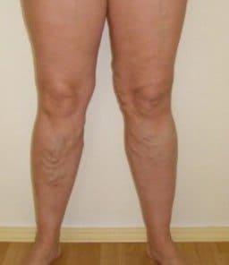
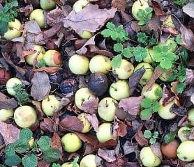
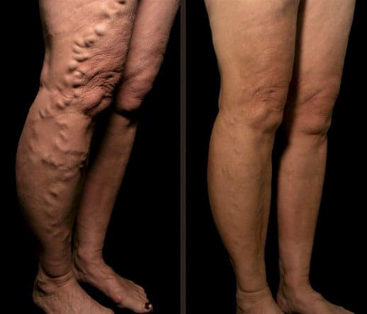
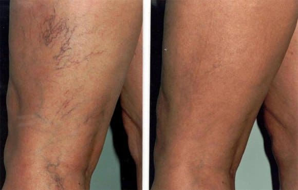
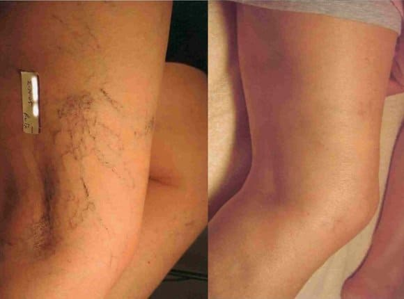
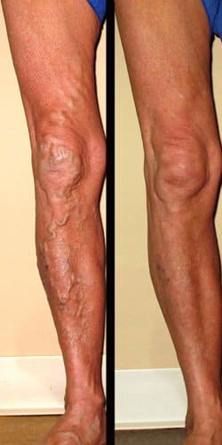
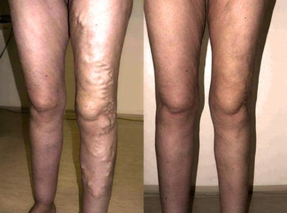
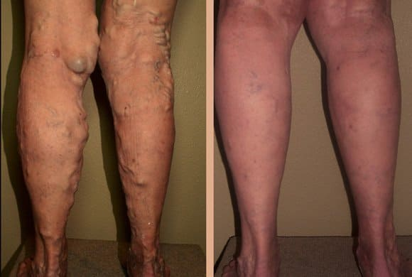
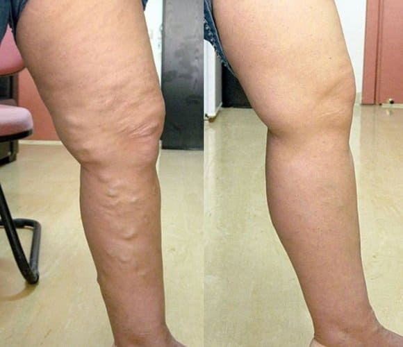

Me deshice de las várices en aras de mis nietos
Cristina
Por fin hoy te contaré cómo salvé mis pies del horrible sufrimiento, de las venas varicosas y lo que me determinó a hacer esto.
Cómo aparecieron las varices en mi vida
Hasta los 61 años, casi no sentía mi edad. Siempre fui feliz con mi vida, en mi magnífica casa, con un gran jardín. No necesitaba ayuda, porque mi salud me permitía ocuparme del hogar por mí misma, sobre todo porque vivo sola en esta casa. Y entonces, tal vez te preguntes, ¿por qué necesito todo esto? Mi mayor alegría fue cuando mi hija vino a visitarme, junto con mis nietos. Cuando vienen de la ciudad tan cansados, hambrientos, atormentados, me encanta brindarles comida hecha por mí, de las verduras y frutas cultivadas en mi finca. Y, por supuesto, también les llevo algo de comida para casa, porque hoy en día en las tiendas sólo se encuentran frutas y verduras cultivadas con productos químicos. Mientras que las mías son limpias y sanas.

Y, mira, a los 61 años empecé a notar que las venas de mis pies son cada vez más visibles. Al principio, no tanto, pero cada mes que pasaba, no sólo eran visibles a través de la piel, sino que también se hinchaban, de modo que empezaban a parecer mangueras. Además, se me hinchaban los pies, tenía un dolor insoportable que no podía soportar.
Cómo las varices cambiaron mi vida
¿Necesito mencionar que el trabajo en el jardín se volvió imposible? Ya no podía subir al segundo piso de mi casa, porque cada escalón era una pesadilla. Venciendo este dolor, me esforcé por cultivar pepinos, tomates y manzanas para mis nietos.
Mi hija me pidió que me mudara a la ciudad, que dejara de trabajar en el jardín, pero yo siempre quise cuidar de mi familia, y me dio mucha pena tener que abandonarlo todo, habría sido una pena para mi trabajo en el jardín. Me negué . Como resultado, una parte de la cosecha no creció, una parte se pudrió, porque no tenía fuerzas para recogerla.

Mi hija siguió visitándome con mis nietos, pero empezó a pedirme que me hospitalizara o incluso que fuera a una casa de descanso, donde alguien pudiera cuidarme. ¡Qué ofendida me sentí! Tenía tantas ganas de recuperar todo lo que tenía antes, cuando mi hija no me miraba como si fuera una #impotente, inútil anciana. Deseaba tanto tener a alguien que me necesitara, para librarme del dolor insoportable y de la enfermedad que avanzaba.
Buscando un tratamiento para las varices
Podrías pensar que durante todo este año no intenté librarme de las várices, pero eso no es cierto. Busqué información en Internet, pregunté a mis amigos, a mis familiares. Incluso probé remedios populares (hice ungüentos especiales, usé compresas), tomé pastillas, probé algunas cremas contra las várices, pero todo fue en vano, nada ayudó . Ninguno de estos remedios pudo aliviar mi dolor, no hicieron que las varices fueran más pequeñas. Sólo tenía la opción de ir al médico pero, tenía miedo, porque creía que me iban a hospitalizar. Pero no tenía alternativas. Por el bien de mis nietos, fui al hospital.
Lo que me dijo el médico
Me sorprendió que, mirando mis horribles pies, el médico dijera: "¡Esto se curará en una semana!" ¡Pero no pude librarme de esta cosa horrible durante tanto tiempo! Y me dio un papelito, donde estaba escrito el nombre de la crema que necesitaba, , y el enlace al sitio donde podría pedirlo. Me explicó que incluso en las farmacias podía encontrar productos falsos, pero el sitio del fabricante sólo vende el producto original y comprobado.
En resumen, me dijo que contiene solo ingredientes naturales , por eso se absorbe muy fácilmente en la piel, a diferencia de otros productos que contienen sustancias químicas. Penetra en las venas y elimina la causa de la hinchazón, tensando las venas, para que éstas recuperen su estado natural. Además, es un producto seguro para todo el organismo, incluso para mi edad, gracias a su composición natural.
Por lo tanto, pedí inmediatamente esta crema , y sentí el efecto desde el primer uso: enfría suavemente la piel, eliminando las sensaciones de dolor y relaja los pies. Tuve que utilizarla por las mañanas y por las noches. Hice intencionadamente una foto "antes" de usar la crema, para poder evaluar su eficacia.

¡El resultado
es simplemente un milagro! Después de 10 días de usar esta crema, ¡el dolor desapareció por completo! Ahora vuelvo a estar activo y mi jardín ha recuperado su cuidada maestría :)
Me alegro de volver a ser la abuela que mis hijos y nietos ven como una persona igual a ellos, y no como una indefensa.
Vuelvo a ocuparme de lo que más me gusta y disfruto pasando tiempo con mis seres queridos. Por cierto, ¿te has dado cuenta de que las venas han desaparecido por completo? Ahora por lo menos no asusto a mis nietos con mis pies.
¡Sé saludable!
Cristina

Comentarios
Violeta
Me salieron varices durante el embarazo. No tengo la posibilidad de ir a médicos caros, por eso intenté deshacerme de esta cosa horrible con todos los remedios que encontré en las tiendas, pero todo fue en vano. El quinto remedio que probé fue exactamente la crema Varicosette que me recomendó mi hermana. Mis piernas están como nuevas en sólo una semana.

Laura
Cristina, gracias por compartir tu opinión. Estaba buscando un remedio eficaz contra las varices. Ya lo he pedido. ¿Después de qué periodo se empiezan a notar los primeros resultados?
Juan Pérez: cirujano, doctor en medicina
Laura, por lo general, la crema alivia el dolor desde el primer uso, y las venas comienzan a reducirse después de sólo 3 días. La duración del tratamiento para una curación completa depende de lo hinchadas que estén las venas.
Verónica
Heredé mis varices de mi madre, ella también luchó contra esta enfermedad en su juventud. No tenía las venas tan hinchadas, pero esta espantosa telaraña era muy antiestética. Pedí y no me arrepentí en absoluto. Al cabo de una semana, ya corrí al centro comercial y me compré toda la ropa que deseaba antes, pero me daba vergüenza ponérmela a causa de la varices.

Leonardo
Tengo varices a causa de mi trabajo. Se sabe que en la construcción hay que levantar pesos, por eso existe el riesgo de que se te inflamen las venas de las piernas. En consecuencia, el dolor infernal te impide trabajar, por eso necesitas tener siempre un bote de analgésicos en el bolsillo. ¡Pero no puedes tomar pastillas todo el tiempo! Cuando me contrataron en otra obra, los nuevos compañeros me dijeron que todos los constructores conocen esta crema, que es la única que los salva. Sin dudarlo, decidí pedirlo también. En 2 semanas, no tuve venas hinchadas, ni dolor.

Angela
¿Se puede aplicar también en las palmas de las manos, para que no se engrosen las venas?
Juan Jones: cirujano, doctor en medicina
¡Angela, por supuesto! Aconsejo a muchos de mis pacientes que utilicen para tener la piel de las manos suave y bonita.
Maria
En mi caso, las venas varicosas aparecieron con la edad. A los 53 años, mis pies se transformaron en algo horrible, me resultaba casi imposible caminar por el dolor. Gracias a esta crema, he conseguido curar mis pies, para no asustar a mis nietos con mi aspecto, ya que el dolor también ha desaparecido y ahora, en cambio, tengo una sensación de ligereza.

Isabelle
Puedo decir que literalmente salvó mis pies Heredé las venas varicosas. Este problema no me preocupaba demasiado, porque no uso pantalones cortos con demasiada frecuencia y no voy a la playa. Pero una vez que mis venas estaban tan hinchadas, que alcanzaron un estado crítico. En el hospital, el médico me dijo que necesitaba usar esta crema con urgencia, de lo contrario, tendrían que amputarme la pierna. En 3 semanas, no tuve ni el más mínimo signo de venas varicosas. Mis amigos, no descuiden su salud, traten sus problemas lo antes posible.

Pedro
¿Cuántas veces al día hay que utilizar la crema en caso de varices en estado avanzado? ¡La piel ya está flácida como un racimo de uvas!
Juan Jones: cirujano, doctor en medicina
Walter, por lo general, se recomienda utilizar esta crema dos veces al día, porque el remedio es realmente muy fuerte, pero en casos graves, se recomienda tres veces al día, a intervalos de tiempo iguales.
Lourdes
No conseguí evitar las varices durante el embarazo. El bebé era muy pesado, además, tuve un embarazo tardío. Las venas estaban tan hinchadas, que tuve que comprar ropa unos números más grandes. Y las piernas me dolían mucho. En las últimas semanas del embarazo, estaba sentada la mayor parte del tiempo en la silla de ruedas, porque me era imposible caminar. La crema me la regaló mi marido, cuando aún no se podía encontrar en el Reino Unido. Fue a Estados Unidos expresamente para comprarlo. Me curó las venas y el dolor en menos de un mes. Y el efecto refrescante es muy relajante para los pies cansados.
